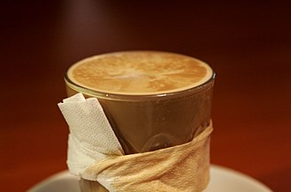

Latte.

A latte is also a milk based drink.
The general rule of thumb with these is that they will be served with espresso, steamed milk and around 1cm of milk froth will settle on top.
A skilled barista that can generate micro foam when stretching the milk will often present your drink with some artistic latte art on top. Yum!